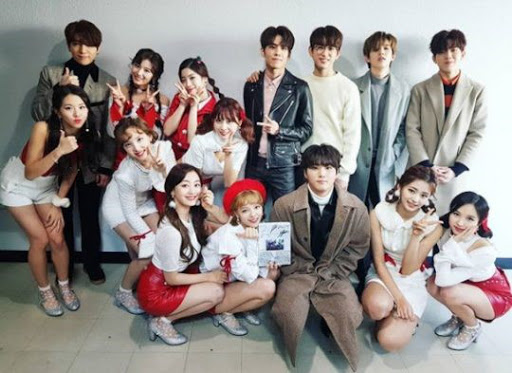

各間公司對偶像們的方式
有再追KPOP的都知道韓國三大上市公司SM，YG，JYP，三間對藝人完全不同的公司。
SM對藝人就像是老闆對員工這樣比較冷血沒有感情，導致其實韓星自殺很多都是出自這間公司。
YG呢倒是還會對藝人有關心，但就我個人認為他們是最不管理藝人的一間公司，像是勝利事件TOP事件，又或者跟公司理念不合就冷凍起來這樣都是讓我覺得不好的。
JYP呢倒是我比較欣賞，老闆本身比較人性而且相當重視人品，所以出道的藝人比較少會因為過往的事情被挖出來炒，雖然他經營公司不一定是最強的，但是我最尊重的就是JYP
不過在怎樣他們都是會以賺錢為主啦，所以在藝人賺錢的時候會讓他們比較類我覺得合理畢竟他們就是培養要來賺錢得麻。
